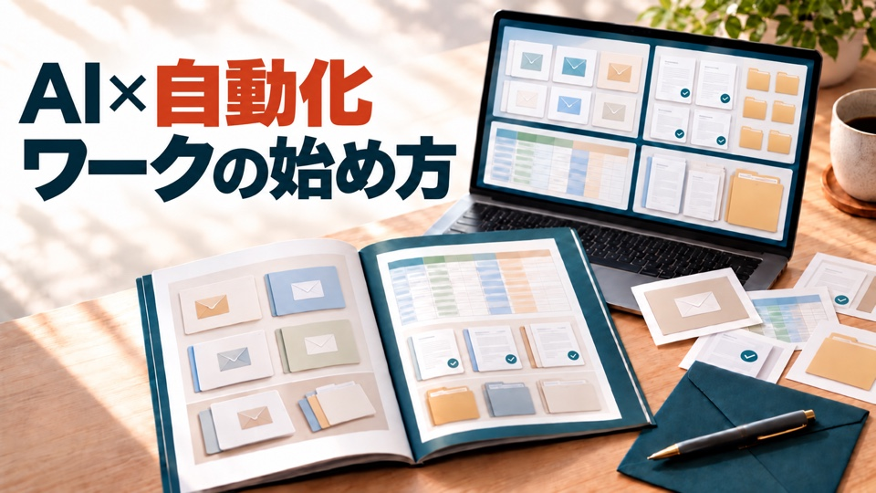

AIがすること
- 5件の資料を読む
- 説明を下書きする
- 未確認を分け、5列へそろえる
AI×自動化ワークの始め方
AIに任せるのは、資料を読み、下書きと確認事項をそろえる所まで。人が元資料と照合して、使ってよい文章か決めます。

表紙画像はイメージです
このワークでは、架空の商品データ5件をAIへ渡し、商品説明の下書きと確認事項をまとめて受け取ります。最後は元の資料と見比べ、間違いを1件直します。
契約、顧客への送信、公開、事実の最終判断までを無人にする教材ではありません。
画像はイメージです。実際の完成表は下に表示しています。
| 商品ID | 商品名 | 説明の下書き | 内容・仕様 | 確認事項 |
|---|---|---|---|---|
| P-001 | 窓辺のバジル栽培セット | 室内向けのバジル栽培セットです。日当たりのよい窓辺で育てます。 | 鉢1個／培養土1袋／種1袋／育て方カード1枚 | 鉢の実寸／種の量／返品条件 |
| P-002 | ハーブティー入門セット | カモミール、ミント、レモングラスの3袋をまとめた入門セットです。 | 3袋 | 各袋の内容量／賞味期限／保存方法 |
| P-003 | 木のスプーン2本組 | 天然木の食器用スプーン2本組です。手洗いを案内します。 | 天然木のスプーン2本 | 樹種／全長／食洗機の可否 |
| P-004 | コットン巾着 | 生成り色の小物入れ用巾着です。 | 1枚 | 寸法／生地の混率／洗濯方法 |
| P-005 | 朝のメモ帳 | 深い緑の表紙を使った、方眼40ページのメモ帳です。 | 1冊／方眼40ページ／表紙は深い緑 | 本体寸法／紙の種類／製造国 |
AIの返し方は毎回同じとは限りません。5件そろい、元資料にない情報を事実として足していないことが完成条件です。
CSVは、商品名や説明を表の形で保存する形式です。今回は「商品ID／商品名／確認済み内容／未確認項目」の4列を渡し、「商品ID／商品名／説明の下書き／内容・仕様／確認事項」の5列へ分けます。
5件の確認済み内容と未確認項目
説明と仕様を分け、未確認は確認事項へ
目的は、架空の商品5件を同じ5列の下書きへそろえることです。ChatGPTで新しいチャットを開き、全文をコピーして送ります。
コピーできない時は、下の「全文を見る」を開き、長押しして選択します。
この練習では架空資料だけを使います。AIへ渡した内容は利用中のサービスで扱われるため、実際の個人情報や社外秘資料は勝手に入れません。
木のスプーンは、食洗機に対応しているか未確認です。P-003だけを直し、ほかの4件は変えません。
天然木のスプーン2本組です。食洗機にも対応しています。
天然木で作った食器用スプーンの2本組です。使用後は手洗いします。食洗機の可否は確認事項へ残します。
コピーできない時は、全文を開いて長押しします。
目的は、3つの架空ファイルをCodexに読ませ、`outputs`へ下書き・確認事項・5列CSVを作ることです。
コピーできない時は、全文を開いて長押しします。
Codexが3ファイルを実際に読みます。単なる並べ替えプログラムではなく、確認済み事実からAIが文章を下書きする練習です。
Codexへ送る指示や読ませる情報は、利用中のAIサービスの条件に従います。このセットは架空資料だけです。
問い合わせ返信にも同じ考え方を使えます。問い合わせと確認済み事実を分け、未確認の空席は言い切らず確認事項へ残します。